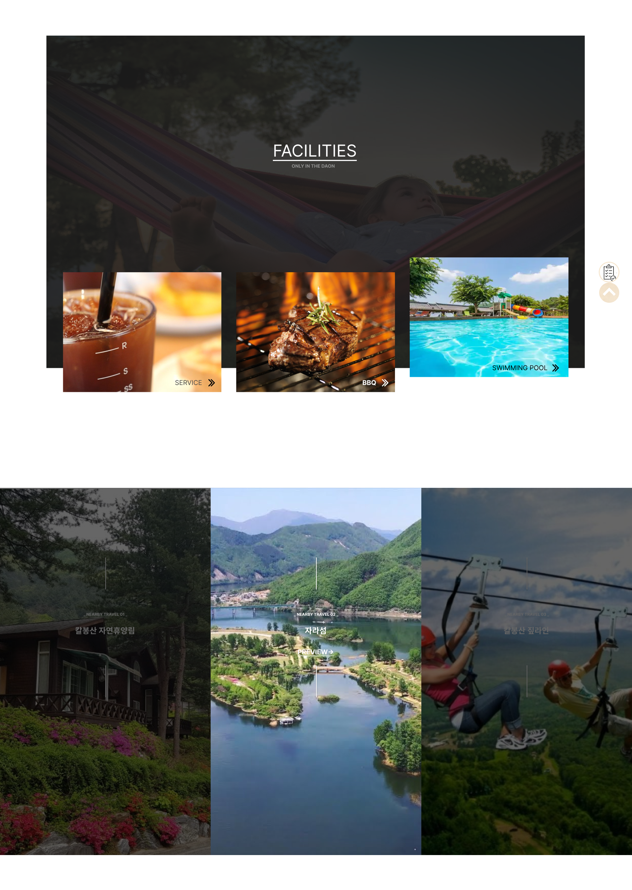
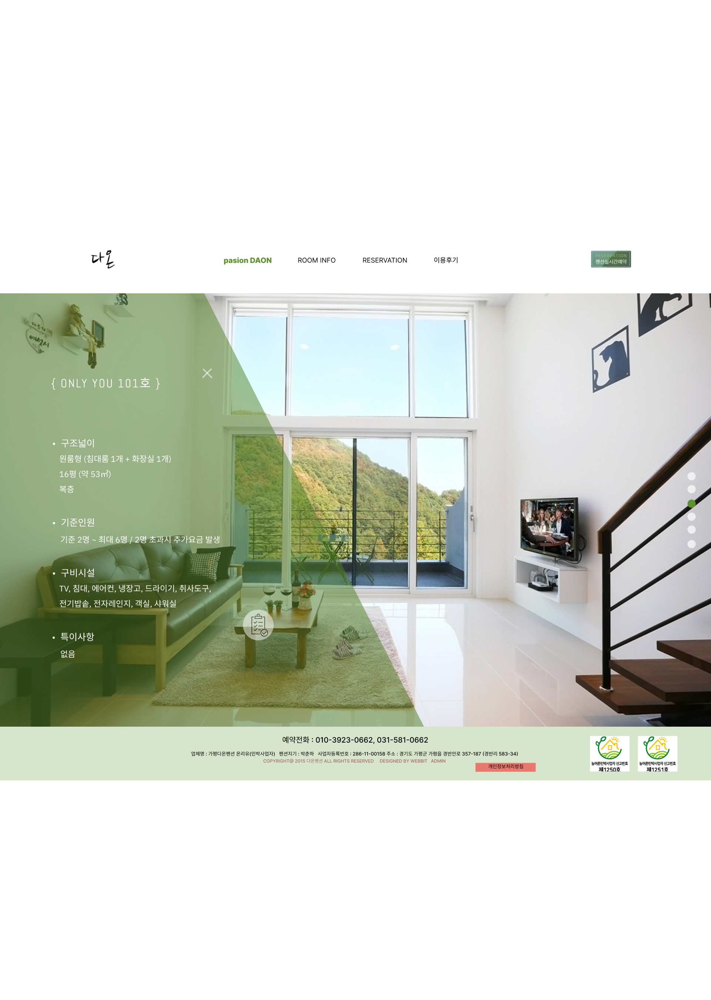

Web Publisher
Port Folio
Work 1
: 리뉴얼 사이트
[사이트 이름] 펜션 다온 [디바이스] web [제작년도] 2022.04 ~ 06 [기여도] 100% [스타일] Font: Open Sans’, sans-serif , 굴림체 [사용언어] PHOTOSHOP,CSS,HTML,SCRIPT [기능소개] 메인 페이지 -슬라이드 -페이드인&아웃 https://dbwjd600.github.io/project01/


